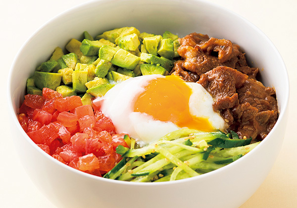

アボカド with 牛肉

豚ロースの南蛮ソテーアボタルソース添え
焼肉として食べるだけでなく、たっぷりの野菜と合わせれば栄養満点の丼に。ナムルの野菜も火を通さず、ご自宅にある調味料で手軽に出来るのも嬉しいポイント。休日のランチにもおすすめです。
材料（2人分）
- アボカド
- 1個
- トマト
- 1個
- きゅうり
- 1本
- 牛肉ばらカルビ焼肉用味付
- 200g
- サラダ油
- 適量
- ごはん
- どんぶり2杯分
- 温泉卵（卵黄）
- 2個
- （調味料A）
- ごま油 …小さじ1 塩・こしょう …適量
- （調味料B）
- ごま油 …小さじ1 塩・こしょう …適量
- おろしにんにく …小さじ1/2
- （調味料C）
- ごま油 …小さじ1 塩 …適量
- 白いりごま …小さじ2
作り方
- 1
- 牛肉は食べやすい大きさに、アボカドとトマトは1㎝角に切る。きゅうりは千切りにし、塩少々をふって数分おく。
- 2
- フライパンに油を入れて牛肉を焼く。
- 3
- アボカドは（調味料A）、トマトは（調味料B）でそれぞれ味付けをする。きゅうりは水気をしっかりしぼり、（調味料C）で味付けをする。
- 4
- 器にごはんをよそい、②と③を盛り付け、中央に温泉卵（または卵黄）を落とせば出来上がり。